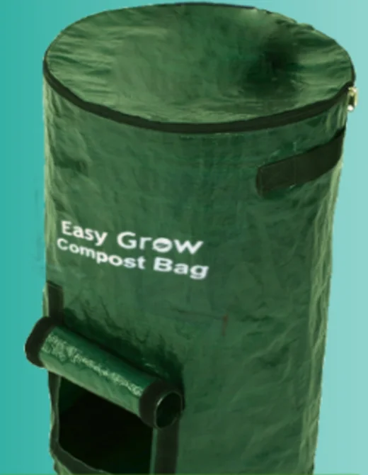
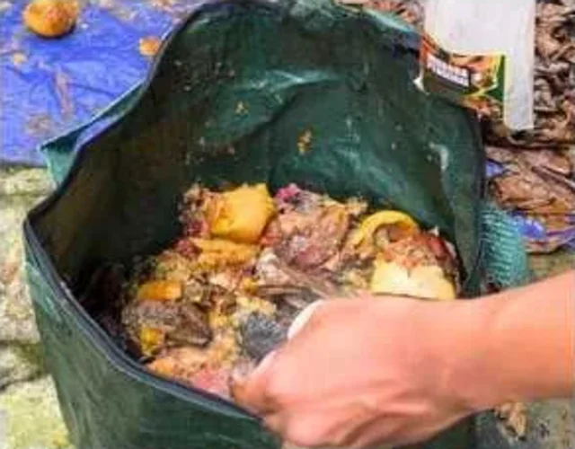
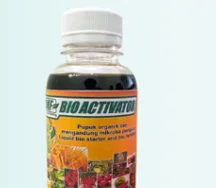
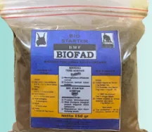
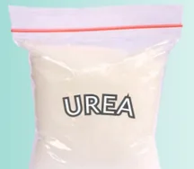
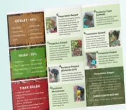
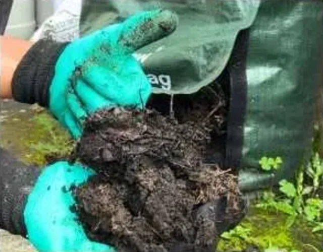
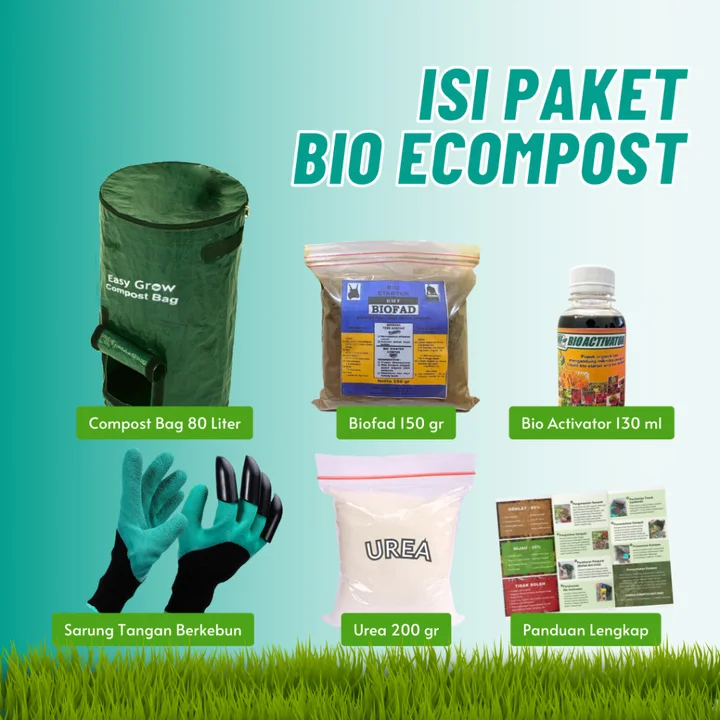

KOMPOSTER RUMAH TANGGA 80 LITER
Ubah sampah dapur
jadi kompos.
Mulai olah sampah organik di rumah dengan Bio Ecompost 80 Liter, paket komposter berbentuk compost bag untuk pemula.

- Compost bag 80 liter
- Diameter 38 cm × tinggi 70 cm
- Untuk sampah organik rumah tangga
PENGOMPOSAN DI RUMAH
Mulai dari sisa dapur sehari-hari.
Kulit buah, sisa sayuran, dan daun kering bisa dimanfaatkan menjadi kompos. Dengan satu tempat khusus untuk bahan organik, Anda bisa mulai memilah sampah dari dapur.
Lihat cara pakai
DETAIL PRODUK DAN ISI PAKET
Kenali paket 80 Liter.
Compost Bag Easy Grow
- Kapasitas
- 80 liter
- Dimensi
- Ø 38 cm × T 70 cm
- Material
- HDPE + penstabil UV
- Fitur
- Dua pegangan, tutup ritsleting, dan bukaan bawah
Spesifikasi berdasarkan katalog compost bag Easy Grow.
Isi Paket Lengkap
- 1 compost bag 80 liter
- 1 Bio Activator, 130 ml
- 1 Biofad, 150 g
- 1 urea, 200 g
- 1 pasang sarung tangan
- 1 panduan pengomposan
Sesuai katalog penjual. Di Shopee, pilih Paket Lengkap ukuran 80 L dan cek ulang isinya.




CARA PAKAI
Empat langkah untuk memulai.
Pilah bahan
Pisahkan kulit buah, sisa sayur, dan daun kering dari plastik dan bahan anorganik.
Siapkan compost bag
Tempatkan bag di area teduh dan siapkan bahan dasar sesuai panduan paket.
Susun bahan organik
Masukkan bahan organik dan ikuti petunjuk paket untuk menyusun lapisan serta menggunakan bahan pengurai.
Pantau prosesnya
Periksa kelembapan dan ikuti petunjuk sirkulasi udara serta tanda kompos matang.

HASIL PENGOMPOSAN
Dari sisa dapur ke kebun.
Kompos matang umumnya berwarna gelap, bertekstur remah, dan beraroma tanah. Setelah matang, kompos dapat dicampurkan ke media tanam.
Lama proses bergantung pada bahan, kelembapan, dan sirkulasi udara. Ikuti panduan sampai kompos mencapai kondisi matang.

PAKET LENGKAP
Bio Ecompost 80 Liter.
Compost bag, bahan pengurai, sarung tangan, dan panduan pengomposan.
Listing Shopee berisi beberapa pilihan. Pilih Paket Lengkap 80 L, lalu periksa harga akhir dan ongkir sebelum membuat pesanan.
FAQ
Pertanyaan umum.
Apa saja isi Paket Lengkap 80 Liter?
Paket di katalog penjual berisi satu compost bag 80 liter, Bio Activator 130 ml, Biofad 150 g, urea 200 g, sepasang sarung tangan, dan satu panduan. Lihat daftar dan foto komponen.
Berapa ukuran compost bag?
Diameter 38 cm dan tinggi 70 cm, dengan kapasitas 80 liter.
Sampah apa yang bisa digunakan?
Mulai dari kulit buah, sisa sayuran, ampas kopi, dan daun kering. Pisahkan plastik dan logam. Hindari daging, minyak, serta produk susu karena dapat menarik hama.
Berapa lama sampai menjadi kompos?
Waktunya bergantung pada bahan, kelembapan, dan sirkulasi udara. Ikuti panduan penggunaan hingga kompos matang.
Bagaimana mengelola bau dan hama?
Ikuti takaran bahan basah dan kering pada panduan. Periksa kelembapan, hindari bahan yang mudah menarik hama, dan tutup kembali bag setelah menambahkan bahan.
Apakah perlu menyiapkan bahan tambahan?
Siapkan sampah organik, bahan kering seperti daun kering, dan tanah jika diminta pada panduan penyiapan lapisan.
Apakah cocok untuk pemula?
Ya. Mulai dengan memilah bahan dari dapur, lalu ikuti langkah penyiapan dan perawatan pada panduan pengomposan.
Bagaimana cara mendapatkan panduan?
Katalog Paket Lengkap mencantumkan panduan pengomposan. Beberapa pilihan pembelian dapat berbeda, jadi periksa deskripsi pilihan yang Anda pesan.
Bagaimana cara memesan?
Buka Shopee dan pilih Paket Lengkap ukuran 80 L. Untuk menanyakan isi paket atau melakukan pemesanan via admin, gunakan WhatsApp.
Apakah ada COD, voucher ongkir, atau garansi?
Periksa opsi pembayaran, voucher, dan ketentuan yang tampil untuk pilihan serta alamat Anda di kanal pembelian. Tanyakan syarat yang berlaku kepada penjual sebelum memesan.
Siap mulai mengompos?
Pilih Bio Ecompost 80 Liter untuk langkah pertama Anda.